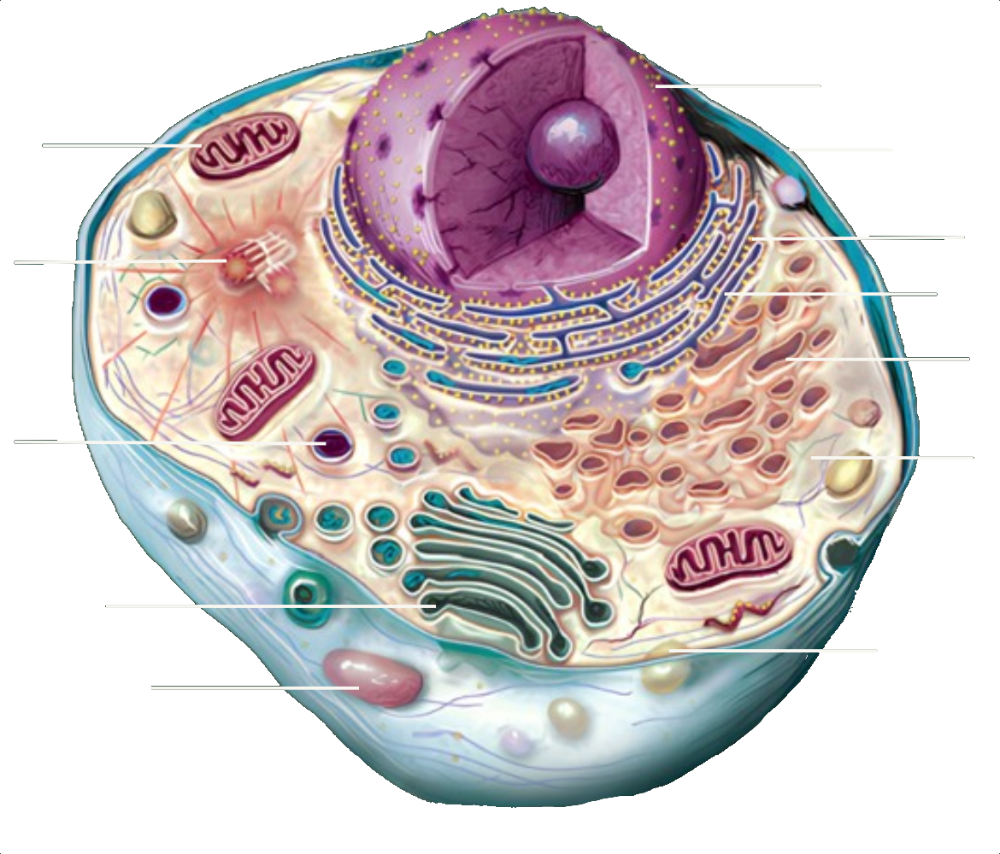

Animal cell
 Nucleus Cytoplasm Plasma membrane Mitochondria Rough endoplasmic reticulum Smooth endoplasmic reticulum Golgi complex Lysosome Ribosome Centrioles Peroxisome Vacuole learn moreWhat are cells?
A cell is the smallest structural and functional unit of all living organisms, a microscopic living system that can exist as a complete organism (unicellular) or as part of a larger organism (multicellular).

An animal cell
is the basic unit of animals and humans, a type of eukaryotic cell that has a well-defined nucleus and various organelles, such as mitochondria, lysosomes, and the endoplasmic reticulum, within its cytoplasm.
see the organelles.jpg)

The nucleus
is the "control center" of eukaryotic cells (animals, plants, fungi, etc.), storing the DNA (genetic material) and controlling the cell's activities such as protein production and cell division.

The plasma membrane
is a thin film that surrounds the cell, composed mainly of a lipid bilayer (phospholipids) and proteins, as well as carbohydrates in the glycocalyx. Its main function is selective permeability, controlling the transport of substances into and out of the cell, keeping the internal environment stable.

The cytoplasm
is the region of the cell between the plasma membrane and the nucleus. It consists mainly of the cytosol (a gel-like fluid), the cellular organelles, and other structures such as the cytoskeleton.

The mitochondria
are organelles of eukaryotic cells that function as "power plants", generating most of the chemical energy (ATP) needed for cellular activities through cellular respiration. They have two membranes (outer and inner) and their own DNA and ribosomes.

The endoplasmic reticulum
is a network of interconnected membranes in eukaryotic cells, essential for the transport of proteins and lipids, and for cellular metabolism. It is divided into:

The rough endoplasmic reticulum
is an organelle formed by a network of membranes with ribosomes attached to its surface. Its main function is to produce and modify proteins that may be sent outside the cell, incorporated into the plasma membrane, or used in organelles such as lysosomes.

The smooth endoplasmic reticulum
is formed by a network of tubules without ribosomes. It has important functions such as lipid and steroid hormone production, detoxification of harmful substances, and carbohydrate metabolism.

The Golgi complex
is formed by stacks of flattened membranous sacs. Its main function is to organize, modify, and package proteins and lipids produced by the endoplasmic reticulum, preparing them for use inside the cell or for export outside.

The lysosomes
are vesicle-shaped organelles that contain digestive enzymes, acting as the cell's "digestive system". Their main function is to digest foreign materials (heterophagy) and recycle obsolete or damaged cell components (autophagy).

The ribosomes
are small organelles found in all types of cells. They are responsible for protein synthesis, reading instructions from messenger RNA and assembling amino acids in the correct order. They can be free in the cytoplasm or attached to the rough endoplasmic reticulum, depending on where the protein will be used.

The centrioles
are cylindrical organelles found in animal cells. They play a key role in cell division by helping to organize the mitotic spindle, which separates chromosomes during mitosis and meiosis. They also participate in the formation of cilia and flagella, structures important for cell movement.

The peroxisomes
are small organelles enclosed by a single membrane, found in eukaryotic cells. They contain oxidative enzymes, such as catalase, to detoxify the cell, metabolize fats, and synthesize phospholipids.

The vacuoles
are small membrane-bound vesicles that have functions such as storing substances (like waste and nutrients), aiding in cellular digestion, and helping in osmotic regulation. Unlike the large central vacuole in plant cells, animal cell vacuoles are usually smaller, more numerous, and temporary.